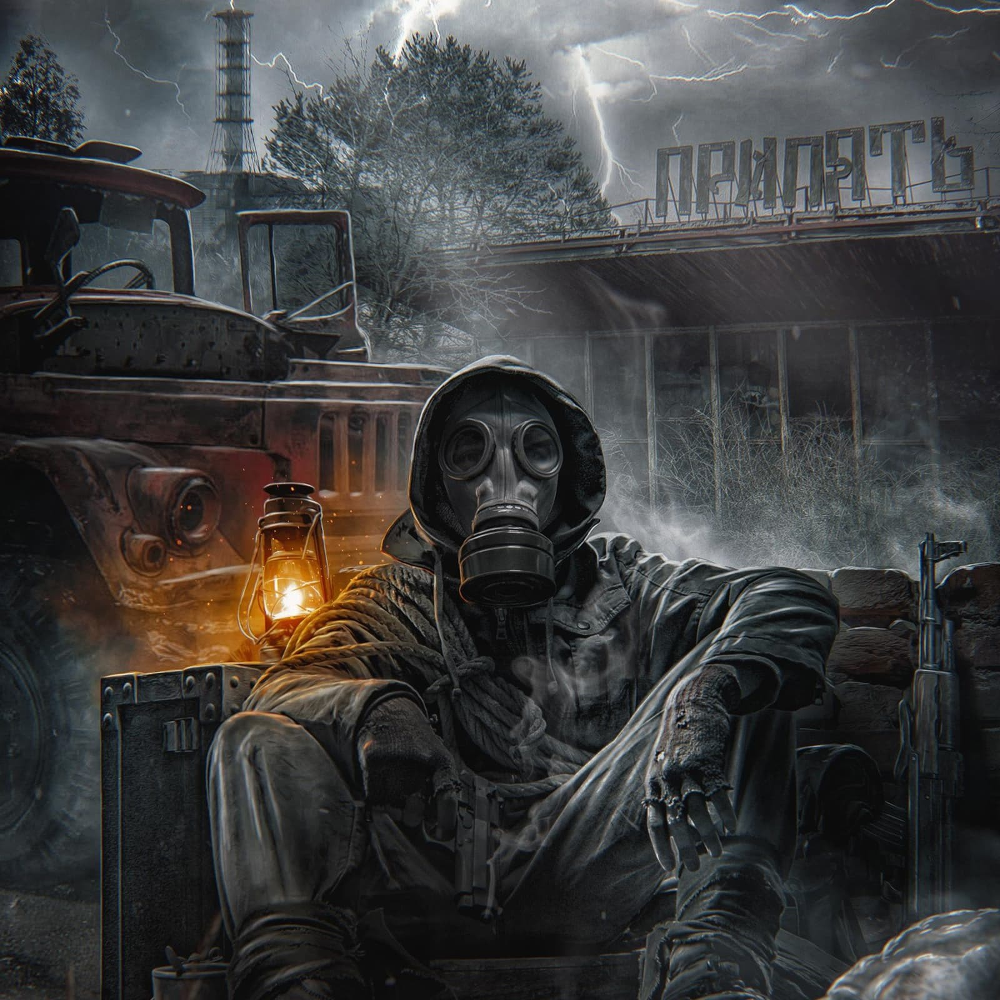

|  |
S.T.A.L.K.E.RСерия игр, разработанная украинской компанией GSC Game World. Создана в жанре шутера от первого лица и survival horror с элементами ролевой игры и action-adventure. События игр разворачиваются в наше время, в альтернативном мире на территории Украины, в Чернобыльской зоне отчуждения. Согласно сюжету серии, в 2006 году зона подверглась неожиданному аномальному воздействию, в результате которого физические, химические и биологические процессы на данной территории изменились. Появилось множество аномалий, артефактов и мутантов. |
| Наименование | Статус | Года |
|---|---|---|
| Cталкер тень чернобыля | Ветеран | Во вселенной с 2010-2022 |
| Cталкер чистое небо | Опытный | Во вселенной с 2016-2022 |